Big Orange Crayonmusical thingsCertainly Sir, Orso, K., and Retsin The Middle East, Cambridge, MA June 15th, 2001 Pictures at the bottom! This is the last in the series of shows that I couldn't write reviews for because my computer was broken. Since it's more than a week after the show, there's no way I could write a review that makes any sense, so I won't. Just a quick bit on each though: Certainly Sir and Orso were the two bands that I hadn't heard before and I liked them both, but I won't make any "they sound like this" statements because I don't really remember any specific songs. There's no point in describing anything in a single sentence anyway, and I'd be making shit up if I went for more. Anywho... As for K. and Retsin, I love them both, so there's pretty much no way that I wouldn't have enjoyed their shows, but even with that considered I thought they both did great shows. It was definitely worth five hours of the movie game in the car and sleeping on Mel's floor. Not that I mind either (actually, I regret not spending more time at Mel's and epic car games are always good), the Middle East is just a bit out of the way... Anyway, I remember the pictures better because they're sitting in front of me, so here they are: Certainly Sir: 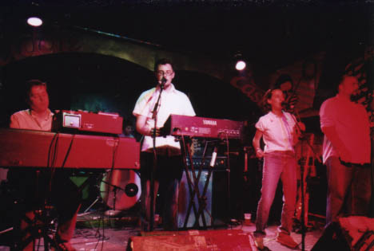 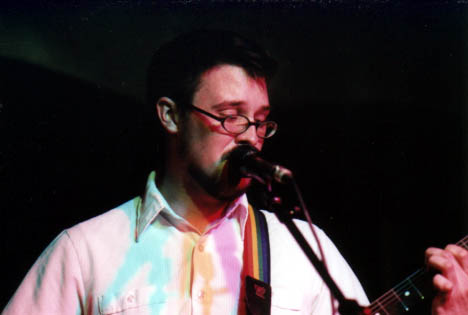 Orso: 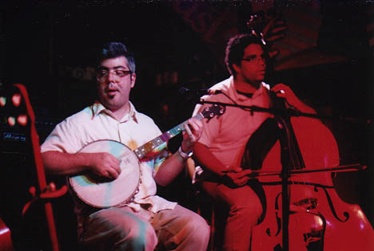 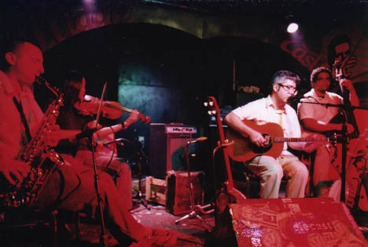 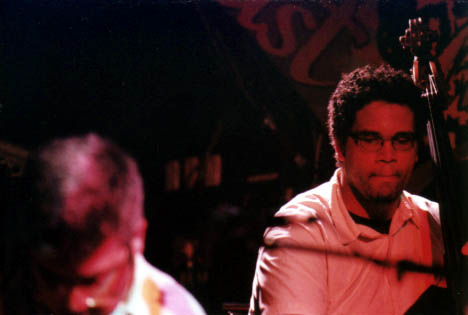 K. 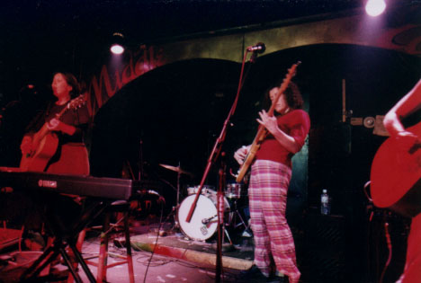 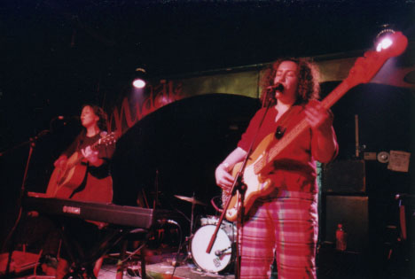 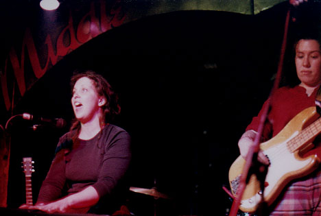 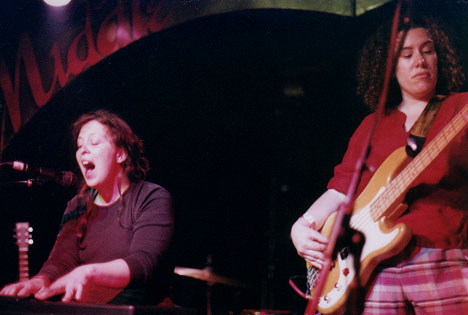 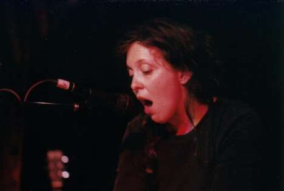 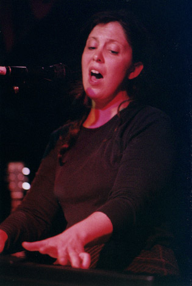 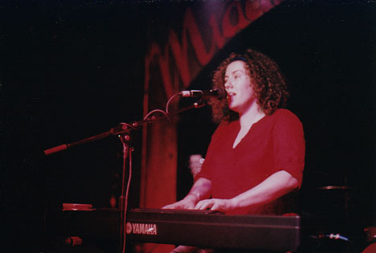 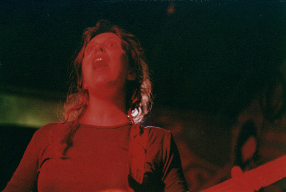 Retsin: 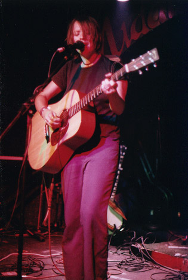 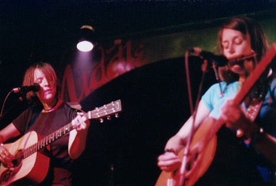 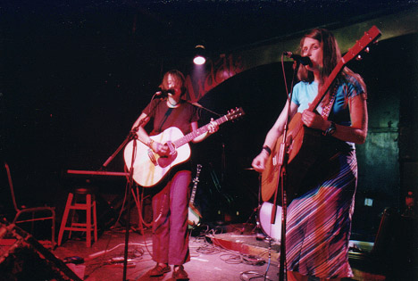 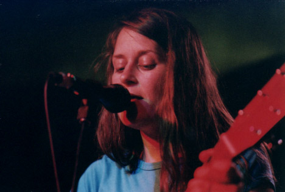 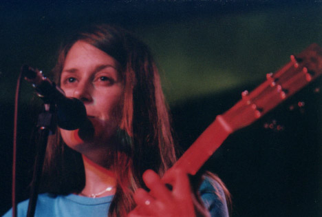 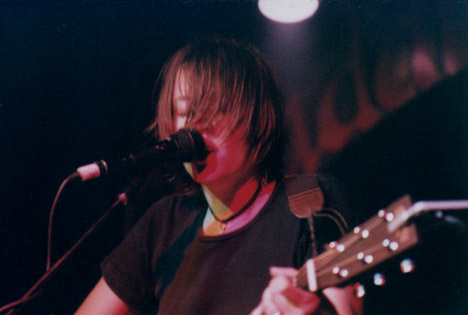 yada yada yada: Nikon FM2n, Fuji Superia 1600, 24mm f/2.8, 50mm f/1.4, 105mm f/2.5 Nikkors. Shutter speeds from 1/15 to 1/60. Yay. Please don't post these elsewhere unless you're in one of the bands or are a nice person. |